题目 3.1_例_1--2---3.3_习_2--1---4.1 3.1_例_1 3.3_习_2
如图，矩形HADC中，G是AD的中点，F、C、D共线，AD^2=2*DC*DF. 求证: AF⊥HG.
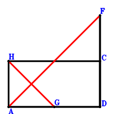
题目 3.1_例_1--2---3.3_习_2--1---4.3 3.1_例_1 3.3_习_2 如图，A、D、G、C四点共圆，CG交AD于B，G是CB的中点，AB⊥CD，如果，求证：AB=CA.
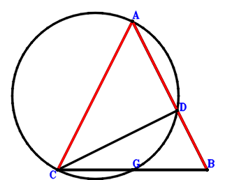
题目 3.1_例_1--2---3.3_习_9变3--1---4.3 3.1_例_1 3.3_习_9变3 如图，A、C、H、B四点共圆，BH、CA交于点E，H是BE的中点，平行四边形GABC. 求证: BA^2+BC^2=EG^2.
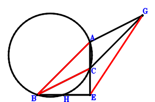
题目 3.1_例_1--2---3.3_习_9变3--2---4.1 3.1_例_1 3.3_习_9变3 如图，矩形DCHA，平行四边形ICAF，C、F、D共线且ID^2=CA^2+FA^2. 求证: FA⊥HG.
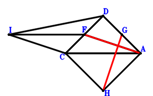
题目 3.1_例_2--1---3.3_习_18--1---4.1 3.1_例_2 3.3_习_18 如图，三角形ECB，P、Q在BC上，BC^2=BQ^2+PC^2，BE=BQ.求证: EC=PC.
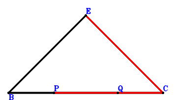
题目 3.1_例_2--2---3.2_例_4--1---4.1 3.1_例_2 3.2_例_4 如图，三角形ABC，G、F在线段CB上，H、I分别是AB、CA的中点，CA=CF，AB=GB，5/4*CB^2=IB^2+CH^2. 求证: 2*FB*CG=GF^2.
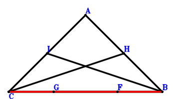
题目 3.1_例_2--2---3.2_例_6--1---4.1 3.1_例_2 3.2_例_6 如图，平行四边形ABHC，G是平面内一点满足GA^2+HG^2=BG^2+GC^2. E、F在线段BC上，AC=EC，BA=BF．求证: 2*BE*FC=EF^2.
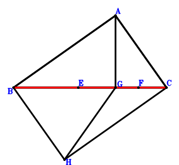
题目 3.1_例_2--2---3.2_习_4--1---4.1 3.1_例_2 3.2_习_4 如图，三角形ABC，G、F在线段BC上，AC=FC，BA=BG. B是IA的中点，B、H、C共线且2*BH=HC，3*AH=IC. 求证: 2*BF*GC=FG^2.
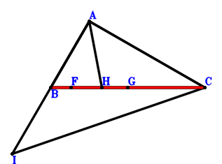
题目 3.1_例_2--2---3.2_习_5--1---4.1 3.1_例_2 3.2_习_5 如图所示，三角形ABC，G、F在线段CB上，CA=CF，AB=GB. I是CA的中点，C、H、B共线且2*HB=CH，2/3*IB=HA. 求证: 2*FB*CG=GF^2.
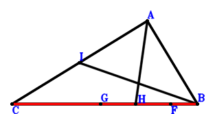
题目 3.1_例_2--2---3.3_例_1--2---4.2 3.1_例_2 3.3_例_1 如图，平行四边形IBAC，HG//BI，E、F在线段BC上，AC=EC，BA=BF，GA^2+HI^2=BG^2+HC^2. 求证: 2*BE*FC=EF^2.
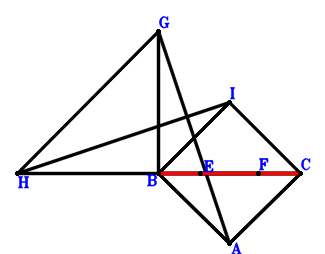
题目 3.1_例_2--2---3.3_例_6--4---4.1 3.1_例_2 3.3_例_6 如图，点A在以BC为直径的圆上，E、F在线段BC，AC=EC，BA=BF. 求证: 2*BE*FC=EF^2.
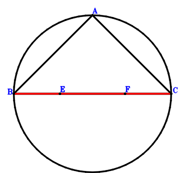
题目 3.1_例_2--2---3.3_例_6--4---4.4 3.1_例_2 3.3_例_6 如图，点D在以BC为直径的圆上. 求证: BD⊥DC.
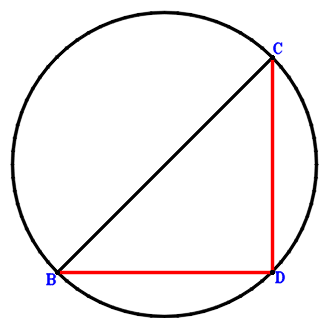
题目 3.1_例_2--2---3.3_习_7--2---4.2 3.1_例_2 3.3_习_7 如图，三角形ABC，G、F在线段BC上，BA=BG，FG^2=2*BF*GC. I是AC的中点，B、H、I共线且BH=2*HI，HA⊥BC，2*BA=AC. 求证: AC=FC.
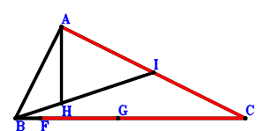
题目 3.1_例_2--2---3.3_习_13--2---4.2 3.1_例_2 3.3_习_13 如图，梯形ABGC中，BG//AC，AG⊥GC，AG^2=BG*AC.E、F在线段BC上，BA=BF,EF^2=2*BE*FC. 求证: AC=EC.
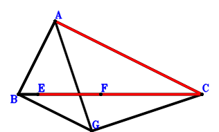
题目 3.1_例_2--2---3.3_习_13--3---4.2 3.1_例_2 3.3_习_13 如图，梯形GBCA中，GA//BC，BA^2=GA*BC，BC⊥BG. E、F在线段BC上，2*BE*FC=EF^2，BA=BF. 求证: AC=EC.
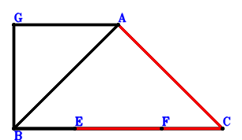
题目 3.1_例_2--2---3.3_习_18--3---4.2 3.1_例_2 3.3_习_18 如图，三角形ACB中，F、E、G在线段BC上，H是AC的中点，BA^2+GC^2=BG^2，AC=FC，BA=BE，2*BF*EC=FE^2. 求证: BC⊥GH.
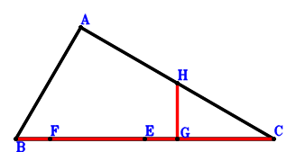
题目 3.1_例_2--2---3.3_习_21--2---4.2 3.1_例_2 3.3_习_21 如图，三角形ACB中，K、G、J、H在线段BC上，K是BJ的中点，I是JA的中点，KA⊥IC，AC=GC，BA=BH，2*BG*HC=GH^2. 求证: JA⊥KC.
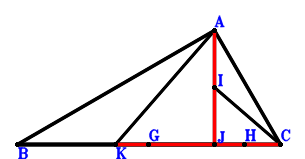
题目 3.1_例_2--2---4.1_例_2--1---4.1 3.1_例_2 4.1_例_2 如图，三角形ABC中，G、F在线段CB上，CA=CF，AB=GB，C是IB的中点，C、A、H共线且2*CA=AH，IA=BH. 求证: 2*FB*CG=GF^2.
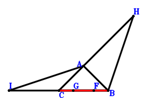
题目 3.2_例_1--2---3.2_例_11--1---4.1 3.2_例_1 3.2_例_11 如图，梯形CIBA，CA//IB，CA=3*IB，G是BA的中点，B是FA的中点，HA⊥BC，I、H、C共线且2/3*HC=IH. 求证: 2*GC=FC.
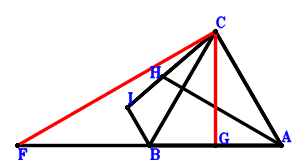
题目 3.2_例_1--2---3.2_习_7--1---4.1 3.2_例_1 3.2_习_7 如图，三角形ABC，H、K、B分别是AB、JB、AG的中点，I、A、J、C共线且JC=2*IA，CB⊥IK. 求证: 2*HC=CG.
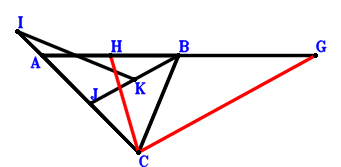
题目 3.2_例_1--2---3.3_例_11--2---4.2 3.2_例_1 3.3_例_11 如图，平行四边形CAJB，H是AB的中点，B是AG的中点，CB=JI，BI^2+AI^2=CI^2. 求证: 2*CH=CG.
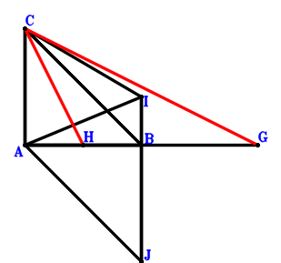
题目 3.2_例_1--2---3.3_例_18--2---4.1 3.2_例_1 3.3_例_18 如图，三角形CBA，G、B、C分别是AB、AF、IB的中点，I、A、H共线且3*AH=IA，2*CG=CF. 求证: CB⊥HB.
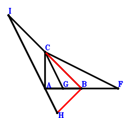
题目 3.2_例_1--2---3.3_习_2--2---4.2 3.2_例_1 3.3_习_2 如图，三角形CBA，G、B是AB、AF的中点，H、A、B共线且2*AB*HB=CB^2，AB⊥HC. 求证: 2*CG=CF.
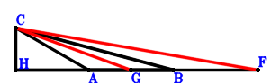
题目 3.2_例_3--2---3.3_习_7--3---4.2 3.2_例_3 3.3_习_7 如图，矩形HBAD，K、B、A是的AD、IA、BG的中点，B、J、K共线且2*BJ=JK，ID⊥HG. 求证: JA⊥BD.
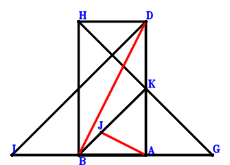
题目 3.2_例_4--2---3.2_例_6--1---4.1 3.2_例_4 3.2_例_6 如图，平行四边形IACB，F、G是CB、AC的中点，H是平面内一点满足AH^2+HB^2=HC^2+IH^2.求证: 5/4*AB^2=AF^2+GB^2.
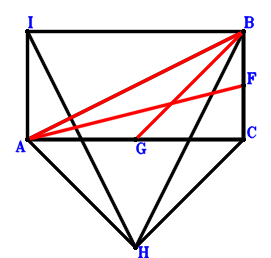
题目 3.2_例_4--2---3.2_习_4--1---4.1 3.2_例_4 3.2_习_4 如图，三角形ABC，G、F、A是BC、CA、CI的中点，B、H、A共线且2*HA=BH，3*CH=BI. 求证: 5/4*BA^2=GA^2+BF^2.
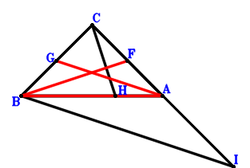
题目 3.2_例_4--2---3.3_例_1--2---4.2 3.2_例_4 3.3_例_1 如图，平行四边形AJBC，G、F是BC、AC的中点，5/4*AB^2=AG^2+FB^2，IH//JA. 求证: HA^2+IB^2=HC^2+IJ^2.
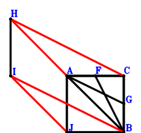
题目 3.2_例_4--2---3.3_例_6--4---4.1 3.2_例_4 3.3_例_6 如图，点C在以AB为直径的圆上，G、F是CB、AC的中点. 求证: 5/4*AB^2=AG^2+FB^2.
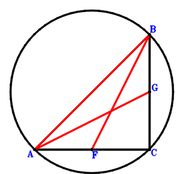
题目 3.2_例_4--2---3.3_例_17--3---4.2 3.2_例_4 3.3_例_17 如图，三角形ABC，F、G分别是BC、CA的中点，5/4*BA^2=FA^2+BG^2，HA⊥BI，I在线段CH上，BC=BI. 求证: CA=HA.
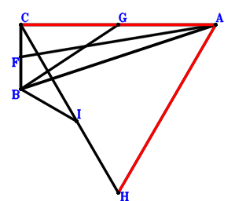
题目 3.2_例_4--2---3.3_习_7--2---4.2 3.2_例_4 3.3_习_7 如图，三角形ABC，G、F分别是CB、CA的中点，5/4*BA^2=GA^2+BF^2，G、H、A共线且GH=2*HA，BA⊥CH. 求证: 2*CA=CB.
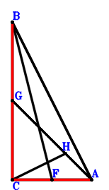
题目 3.2_例_4--2---3.3_习_13--2---4.2 3.2_例_4 3.3_习_13 如图，梯形BHAC，AH//CB，G、F分别是CB、AC的中点，5/4*AB^2=AG^2+FB^2，AH*CB=HC^2. 求证: HB⊥HC.
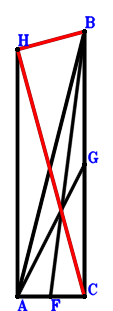
题目 3.2_例_4--2---3.3_习_13--3---4.2 3.2_例_4 3.3_习_13 如图，梯形CBAH，CH//BA，BA⊥AH，G、F分别是BC、CA的中点，5/4*BA^2=GA^2+BF^2. 求证: CA^2=CH*BA.
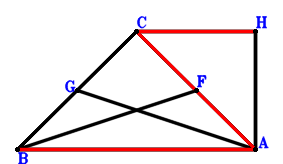
题目 3.2_例_4--2---3.3_习_18--3---4.2 3.2_例_4 3.3_习_18 如图，三角形ABC，G、F分别是CB、AC的中点，5/4*AB^2=AG^2+FB^2，I在线段AB上，AC^2+IB^2=AI^2. 求证: AB⊥IG.
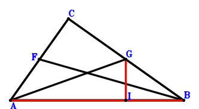
题目 3.2_例_4--2---3.3_习_21--2---4.2 3.2_例_4 3.3_习_21 如图，三角形ABC，G、H分别是AC、CB的中点，5/4*AB^2=AH^2+GB^2．J在线段AB上，I是JC的中点，K是AJ的中点，IB⊥KC. 求证: KB⊥JC.
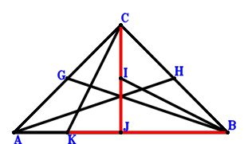
题目 3.2_例_4--2---4.1_例_1--2---4.2 3.2_例_4 4.1_例_1 如图，三角形ABC，I、H、K、L分别是CB、AC、JC、AB的中点，JA⊥JB，JC⊥KL. 求证: 5/4*AB^2=AI^2+HB^2.
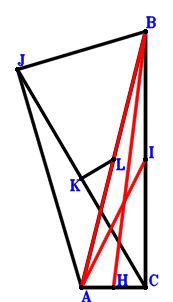
题目 3.2_例_4--2---4.1_例_2--1---4.1 3.2_例_4 4.1_例_2 如图，三角形ABC，G、F分别是CB、AC的中点，5/4*AB^2=AG^2+FB^2. B是AI的中点，H、C、B共线且2*CB=HC. 求证: HA=CI.
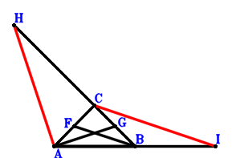
题目 3.2_例_5--1---3.3_习_6--3---4.2 3.2_例_5 3.3_习_6 如图，AG、CD交于点B，BA*BG=BC*BD，BA⊥GD. 求证: CA⊥BD.
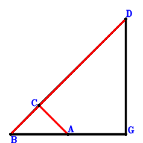
题目 3.2_例_5--2---3.2_例_7--1---4.1 3.2_例_5 3.2_例_7 如图，梯形ABCD，AD//BC，F在线段BC上，BA^2+DC^2=AD^2+BC^2，H是BA的中点，G是DC的中点，BF=HG. 求证: DF=HG.
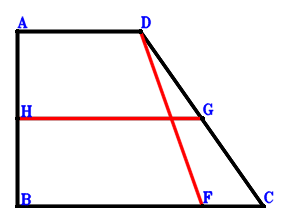
题目 3.2_例_5--2---3.2_习_6--1---4.1 3.2_例_5 3.2_习_6 如图，梯形ABCD，AD//BC，I、H、J、G分别是AD、AB、BC、DC的中点，2*IJ=AD+BC，F在线段BC上，BF=HG. 求证: DF=HG.
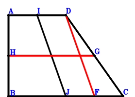
题目 3.2_例_5--2---3.3_习_1--2---4.2 3.2_例_5 3.3_习_1 如图，梯形ABCD，DA//CB，AB⊥CB，AB^2=CB*DA，H、G分别是AB、DC的中点，F在线段CB上，FB=GH. 求证: DF=GH.
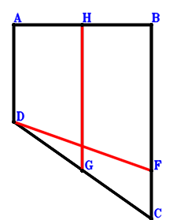
题目 3.2_例_6--2---3.3_例_6--4---4.1 3.2_例_6 3.3_例_6 如图，点B在以AC为直径的圆上，平行四边形FABC，E是平面内任意一点，求证: AE^2+EC^2=EB^2+FE^2.
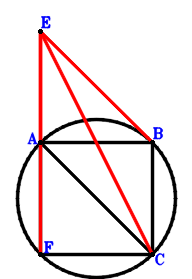
题目 3.2_例_6--2---3.3_习_21--2---4.2 3.2_例_6 3.3_习_21 如图，平行四边形CHAB，K、J、I分别是是JA、CA、JB的中点，KB⊥CI，JB⊥CK，G是平面内任意一点. 求证: AG^2+CG^2=BG^2+HG^2.
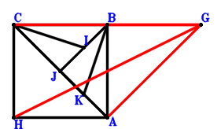
题目 3.2_例_7--2---3.2_习_6--1---4.1 3.2_例_7 3.2_习_6 如图，四边形ABCD，DA//CB，AB^2+DC^2=DA^2+CB^2，E、F分别是DA、CB的中点. 求证: 2*EF=DA+CB.
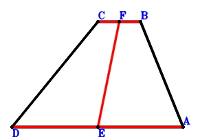
题目 3.2_例_7--2---3.3_例_5--1---4.2 3.2_例_7 3.3_例_5 如图，B、D、G、H四点共圆，HB、GD交于点A，C是三角形HGA的外心，四边形ABCD. 求证: AB^2+DC^2=AD^2+BC^2.
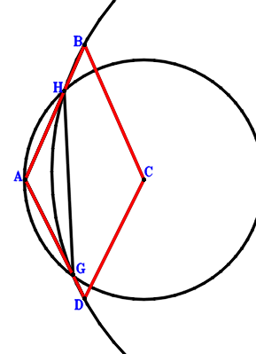
题目 3.2_例_7--2---3.3_习_1--2---4.2 3.2_例_7 3.3_习_1 如图，梯形DABC，AD//BC，AB^2=BC*AD，AB⊥BC. 求证: AB^2+DC^2=AD^2+BC^2.
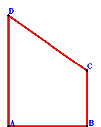
题目 3.2_例_7--2---3.3_习_6变1--2---4.2 3.2_例_7 3.3_习_6变1 如图，由三角形GCA的两边向外做正三角形DCG、ACB，GA⊥BC. 求证: AB^2+DC^2=AD^2+BC^2.
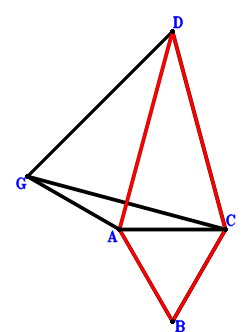
题目 3.2_例_7--2---3.3_习_26--2---4.2 3.2_例_7 3.3_习_26 如图，由三角形ACH的两边向外做正方形IACK、CHBJ，HA⊥DC，HC⊥ID，四边形DABC. 求证: AB^2+DC^2=AD^2+BC^2.
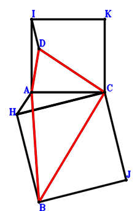
题目 3.2_例_8--1---4.1_例_1--1---4.1 3.2_例_8 4.1_例_1 如图，梯形CBAD，BA//CD，AD=CB，H、I分别是CD、AB的中点. 求证: CD⊥IH.
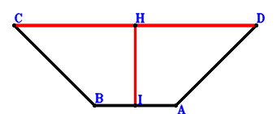
题目 3.2_例_8--1---4.1_例_1--1---4.2 3.2_例_8 4.1_例_1 如图，梯形ABCD，AB//CD，CD比AB长，DA=CB，DA⊥DB. 求证: CA⊥CB.
题目 3.2_例_8--2---4.1_例_1--1---4.1 3.2_例_8 4.1_例_1 如图，梯形ABCD，BA//CD，CA^2=DA^2+BA*CD，H、I分别是CD、BA的中点. 求证: CD⊥HI.
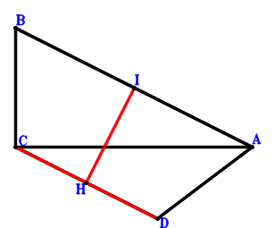
题目 3.2_例_8--2---4.1_例_1--1---4.2 3.2_例_8 4.1_例_1
如图，梯形ABCD，BA//CD，CA^2=DA^2+BA*CD，DA⊥DB. 求证: CA⊥CB.
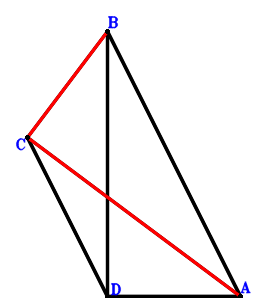
题目 3.2_例_9--2---3.3_例_3--2---4.2 3.2_例_9 3.3_例_3 如图，P、C、F、A四点共圆，P在线段BC上，A在线段BF上，BP=PF. 求证: BA^2=AP^2+BP*PC.
题目 3.2_例_9--2---3.3_习_11--2---4.2 3.2_例_9 3.3_习_11 如图，三角形ABC，P在线段CB上，A、P、D共线，AB^2=AP*AD，AB^2=AP^2+PB*CP. 求证: C、D、B、A四点共圆.
题目 3.2_例_11--2---3.2_习_7--1---4.1 3.2_例_11 3.2_习_7 如图，梯形HDAB，DA//HB，3*HB=DA，J在线段DA上，K是JB的中点，A在线段DI上，2*AI=DJ，DB⊥KI，D、G、H共线且2/3*DG=GH. 求证: GA⊥DB.
题目 3.2_例_11--2---3.3_例_18--2---4.1 3.2_例_11 3.3_例_18 如图，梯形ADGB，DA//GB，3*GB=DA，D是IB的中点，I、A、H共线且3*AH=IA，DB⊥BH，D、F、G共线且2/3*DF=FG. 求证: FA⊥DB.
题目 3.2_例_11--2---3.3_习_2--2---4.2 3.2_例_11 3.3_习_2 如图，梯形DABF，DA//FB，3*FB=DA，G、A、B共线，2*AB*GB=DB^2，AB⊥GD，D、E、F共线，2/3*DE=EF. 求证: AE⊥DB.
题目 3.2_习_1--2---3.3_例_15--2---4.1 3.2_习_1 3.3_例_15 如图，平行四边形CHFB，I、G分别是CB、CH的中点，P是平面内任意一点，E是FP的中点，J是PI的中点，PB⊥GE，C、K、P共线且3*KP=CK. 求证: JB=KI.
题目 3.2_习_1--2---3.3_例_18--2---4.1 3.2_习_1 3.3_例_18 如图，平行四边形GICB，K是平面内一点，H、P、F分别是IC、KB、GP的中点，JB⊥PB，K、C、J共线且3*CJ=KC. 求证: PB⊥HF.
题目 3.2_习_1--2---3.3_习_2--2---4.2 3.2_习_1 3.3_习_2 如图，平行四边形BFHC，P是平面内一点，E、G分别是FP、CH的中点，BP⊥EG，B、I、C共线且2*BC*BI=BP^2. 求证: BC⊥PI.
题目 3.2_习_4--2---3.2_习_5--1---4.1 3.2_习_4 3.2_习_5 如图，三角形ABC，B是AG的中点，I是CA的中点，C、F、B共线且2*FB=CF，2/3*IB=AF. 求证: 3*AF=CG.
题目 3.2_习_4--2---3.3_例_1--2---4.2 3.2_习_4 3.3_例_1 如图，平行四边形BJCA，B、F、C共线且2*BF=FC，B是GA的中点，3*FA=GC，IH//JB. 求证: HA^2+IJ^2=HB^2+IC^2.
题目 3.2_习_4--2---3.3_例_6--4---4.1 3.2_习_4 3.3_例_6 如图，点A在以CB为直径的圆上，B是AG的中点，C、F、B共线且2*FB=CF. 求证: 3*AF=CG.
题目 3.2_习_4--2---3.3_例_17--3---4.2 3.2_习_4 3.3_例_17 如图，三角形ABC，B、F、C共线且2*BF=FC，B是GA的中点，3*FA=GC，H在线段IA上，CA=HC，BA=IB. 求证: IB⊥HC.
题目 3.2_习_4--2---3.3_习_13--2---4.2 3.2_习_4 3.3_习_13 如图，梯形ABHC，BH//AC，HA^2=BH*AC，B是GA的中点，B、F、C共线且2*BF=FC，3*FA=GC. 求证: HA⊥HC.
题目 3.2_习_4--2---3.3_习_13--3---4.2 3.2_习_4 3.3_习_13 如图，梯形CAHB，AH//CB，AB^2=AH*CB，C、F、B共线且2*FB=CF，B是AG的中点，3*AF=CG. 求证: CB⊥HB.
题目 3.2_习_4--2---3.3_习_18--3---4.2 3.2_习_4 3.3_习_18 如图，三角形AGC，B、H分别是GA、AC的中点，I在线段BC上，BC⊥IH，B、F、C共线且2*BF=FC，3*AF=GC. 求证: BA^2+IC^2=BI^2.
题目 3.2_习_4--2---4.1_例_1--2---4.2 3.2_习_4 4.1_例_1 如图，K、B、L分别是JA、AI、CB的中点，C、H、B共线且2*HB=CH，JA⊥KL，3*AH=CI. 求证: JB⊥JC.
题目 3.2_习_4--2---4.1_例_2--1---4.1 3.2_习_4 4.1_例_2 如图，三角形ABC，C、B分别是IB、AG的中点，C、F、B共线且2*FB=CF，C、A、H共线且2*CA=AH，IA=BH. 求证: 3*AF=CG.
题目 3.2_习_5--2---3.3_例_1--2---4.2 3.2_习_5 3.3_例_1 如图，平行四边形BJCA，G是CA的中点，B、F、C共线且2*BF=FC，IH//JB，HA^2+IJ^2=HB^2+IC^2. 求证: 2/3*BG=FA.
题目 3.2_习_5--2---3.3_例_17--3---4.2 3.2_习_5 3.3_例_17 如图，三角形ABC，G是CA的中点，B、F、C共线且2*BF=FC，IB⊥HC，H在线段IA上，CA=HC，BA=IB. 求证: 2/3*BG=FA.
题目 3.2_习_5--2---3.3_习_13--2---4.2 3.2_习_5 3.3_习_13 如图，梯形HCAB，HB//CA，HA^2=HB*CA，G是CA的中点，C、F、B共线且2*FB=CF，HA⊥CH. 求证: 2/3*GB=FA.
题目 3.2_习_5--2---3.3_习_13--3---4.2 3.2_习_5 3.3_习_13 如图，梯形ACBH，AH//CB，AB^2=AH*CB，CB⊥BH，G是CA的中点，C、F、B共线且2*FB=CF. 求证: 2/3*GB=AF.
题目 3.2_习_5--2---3.3_习_21--2---4.2 3.2_习_5 3.3_习_21 如图，H、I分别是CA、JA的中点，J、G在线段CB上，K是JB的中点，2*GB=CG，KA⊥CI，2/3*HB=GA. 求证: JA⊥CK.
题目 3.2_习_5--2---4.1_例_1--2---4.2 3.2_习_5 4.1_例_1 如图，K、I、L分别JA、AC、BC的中点，JA⊥KL，B、H、C共线且2*BH=HC，2/3*BI=AH. 求证: JB⊥JC.
题目 3.2_习_5--2---4.1_例_2--1---4.1 3.2_习_5 4.1_例_2 如图，三角形BCH，C是BI的中点，H、A、C共线且2*AC=HA，G是AC的中点，B、F、C共线且2*BF=FC，AI=HB. 求证: 2/3*BG=FA.
题目 3.2_习_6--2---3.3_习_1--2---4.2 3.2_习_6 3.3_习_1 如图，梯形ABCD，AD//BC，AB^2=BC*AD，E、F分别是AD、CB的中点，AB⊥BC. 求证: 2*EF=AD+BC.
题目 3.2_习_7--2---3.3_例_11--2---4.2 3.2_习_7 3.3_例_11 如图，平行四边形BCAK，H在线段CA上，I是HB的中点，A在线段CG上，CB⊥IG，BJ^2+AJ^2=CJ^2，2*AG=CH. 求证: CB=JK.
题目 3.2_习_7--2---3.3_习_2--2---4.2 3.2_习_7 3.3_习_2 如图，三角形BCJ，B、A、J共线，2*BA*BJ=BC^2，H在线段AC上，I是BH的中点，BA⊥CJ，2*GA=HC. 求证: BC⊥IG.
题目 3.3_例_1--2---3.3_例_6--4---4.1 3.3_例_1 3.3_例_6 如图，平行四边形AGCB，点B在以AC为直径的圆上，FE//GA. 求证: EA^2+FC^2=EB^2+FG^2.
题目 3.3_例_1--2---3.3_例_17--3---4.2 3.3_例_1 3.3_例_17 如图，平行四边形HABC，GF//AH，FA^2+GC^2=FB^2+GH^2.I在线段JB上，JA⊥IC，BC=IC. 求证: AB=JA.
题目 3.3_例_1--2---3.3_习_7--2---4.2 3.3_例_1 3.3_习_7 如图，平行四边形BCHA，2*BA=CB，FG//HA，FA^2+GC^2=FB^2+GH^2.J是CB的中点，J、I、A共线，JI=2*IA. 求证: CA⊥BI.
题目 3.3_例_1--2---3.3_习_13--2---4.2 3.3_例_1 3.3_习_13 如图，平行四边形GABC，梯形CHAB，HB⊥HC，AH*BC=HB^2，EF//AG. 求证: FA^2+EC^2=FB^2+EG^2.
题目 3.3_例_1--2---3.3_习_13--3---4.2 3.3_例_1 3.3_习_13 如图，平行四边形CBAG，梯形CBHA，BH//CA，EF//AG，BA^2=BH*CA，EA^2+CF^2=BE^2+FG^2. 求证: CA⊥HA.
题目 3.3_例_1--2---3.3_习_18--3---4.2 3.3_例_1 3.3_习_18 如图，平行四边形GABC，H是BC的中点，I在线段AC上，AB^2+IC^2=AI^2，FE//AG，AE^2+FC^2=EB^2+FG^2. 求证: AC⊥HI.
题目 3.3_例_1--2---3.3_习_21--2---4.2 3.3_例_1 3.3_习_21 如图，平行四边形AICB，K在线段AC上，L、J分别是AK、KB的中点，LB⊥JC，HG//IA，GA^2+HC^2=GB^2+HI^2. 求证: KB⊥LC.
题目 3.3_例_1--2---4.1_例_1--2---4.2 3.3_例_1 4.1_例_1 如图，平行四边形CBAJ，M是CA的中点，L是BK的中点，BK⊥LM，IH//AJ，HA^2+CI^2=BH^2+IJ^2. 求证: KA⊥CK.
题目 3.3_例_1--2---4.1_例_2--1---4.1 3.3_例_1 4.1_例_2 如图，平行四边形AHCB，C是AJ的中点，I、B、C共线且2*CB=BI，GF//HA，FA^2+GC^2=FB^2+GH^2. 求证: AI=BJ.
题目 3.3_例_3--2---3.3_习_11--2---4.3 3.3_例_3 3.3_习_11 如图，G、A、B、C四点共圆，CB、GA交于点F，F、G、A共线且BA^2=FA*GA. 求证: BA=CA.
题目 3.3_例_6--4---3.3_例_17--3---4.3 3.3_例_6 3.3_例_17 如图，点C在以AD为直径的圆上，F在线段GC上，AC=GA，DC=FD. 求证: GA⊥FD.
题目 3.3_例_6--4---3.3_习_7--2---4.3 3.3_例_6 3.3_习_7 如图，点C在以AB为直径的圆上，G是CB的中点，A、F、G共线且FG=2*AF，AB⊥FC. 求证: 2*AC=CB.
题目 3.3_例_6--4---3.3_习_13--2---4.3 3.3_例_6 3.3_习_13 如图，梯形CEAB，AE//BC，AE*BC=EB^2，点B在以AC为直径的圆上. 求证: EB⊥EC.
题目 3.3_例_6--4---3.3_习_13--3---4.3 3.3_例_6 3.3_习_13 如图，梯形CDEB，DE//CB，DB^2=DE*CB，点D在以CB为直径的圆上. 求证: CB⊥EB.
题目 3.3_例_6--4---3.3_习_18--3---4.3 3.3_例_6 3.3_习_18 如图，点C在以AB为直径的圆上，E是CB的中点，F在线段AB上，AC^2+FB^2=AF^2. 求证: AB⊥FE.
题目 3.3_例_6--4---3.3_习_21--2---4.3 3.3_例_6 3.3_习_21 如图，点A在以CB为直径的圆上，H在线段CB上，G、I分别是AH、HB的中点，AI⊥CG. 求证: AH⊥CI.
题目 3.3_例_6--4---4.1_例_1--2---4.3 3.3_例_6 4.1_例_1 如图，点D、H在以BA为直径的圆上，J是圆心，I是HD的中点. 求证: HD⊥IJ.
题目 3.3_例_6--4---4.1_例_2--2---4.3 3.3_例_6 4.1_例_2 如图，点A在以BC为直径的圆上，C是BF的中点，G、A、C共线且2*AC=GA. 求证: AF=GB.
题目 3.3_例_11--2---3.3_例_15--2---4.1 3.3_例_11 3.3_例_15 如图，平行四边形BCGA，H、I分别是CA、BH的中点，B、J、C共线且3*JB=CJ，AE^2+CE^2=BE^2，IA=JH. 求证: BA=GE.
题目 3.3_例_11--2---3.3_例_18--2---4.1 3.3_例_11 3.3_例_18 如图，平行四边形CBAH，B是JA的中点，J、C、I共线且3*CI=JC，BA=GH，AG^2+CG^2=BG^2. 求证: BA⊥AI.
题目 3.3_例_11--2---3.3_习_2--2---4.1 3.3_例_11 3.3_习_2 如图，平行四边形BAGC，AC=CB，AE^2+EC^2=EB^2. 求证: AB=GE.
题目 3.3_例_11--2---3.3_习_2--2---4.2 3.3_例_11 3.3_习_2 如图，平行四边形BCGA，H、C、A共线且2*CA*HA=BA^2，CA⊥HB，AE^2+CE^2=BE^2. 求证: BA=EG.
题目 3.3_例_15--1---3.3_例_18--2---4.1 3.3_例_15 3.3_例_18 如图，三角形ABC，C、F、G分别是AJ、BA、CF的中点，I、B、J共线且3*BI=JB，B、H、C共线且3*HC=BH，GA=HF. 求证: CA⊥IA.
题目 3.3_例_15--1---3.3_习_2--2---4.1 3.3_例_15 3.3_习_2 如图，三角形ABC，D、E分别是AB、CD的中点，C、F、B共线且3*FC=BF，EA=FD. 求证: BA=BC.
题目 3.3_例_15--1---3.3_习_2--2---4.2 3.3_例_15 3.3_习_2 如图，三角形ABC，E、F分别是AB、CE的中点，C、G、B共线且3*CG=GB，H、B、A共线且CA^2＝2*BA*HA，BA⊥HC. 求证: FA=GE.
题目 3.3_例_17--3---3.3_习_13--2---4.2 3.3_例_17 3.3_习_13 如图，梯形CDHA，HA//DC，HA*DC=CH^2，F在线段CG上，AG⊥DF，DC=DF，CA=AG. 求证: CH⊥DH.
题目 3.3_例_17--3---4.1_例_1--2---4.2 3.3_例_17 4.1_例_1 如图，K、L分别是JC、DA的中点，H在线段CI上，AI⊥DH，JC⊥KL，CA=AI，DC=DH. 求证: JA⊥JD.
题目 3.3_例_17--3---4.1_例_2--1---4.1 3.3_例_17 4.1_例_2 如图，三角形ACG，D是AI的中点，H、C、D共线且2*CD=HC，F在线段CG上，AG⊥FD，CD=FD，AC=AG. 求证: HA=CI.
题目 3.3_例_18--1---3.3_习_2--2---4.2 3.3_例_18 3.3_习_2 如图，三角形BCH，C是GB的中点，H、A、B共线且2*AB*HB=CB^2，AB⊥HC，G、A、F共线且3*AF=GA. 求证: CB⊥FB.
题目 3.3_习_2--1---3.3_习_9变1--1---4.1 3.3_习_2 3.3_习_9变1 如图，三角形ABC，角DBA=60度，CB^2=DB*AB，AB⊥DC. 求证: AB=CA.
题目 3.3_习_2--1---3.3_习_9变1--2---4.1 3.3_习_2 3.3_习_9变1 如图，三角形ABC，G、F分别是DA、CB的中点，AB⊥CD，4*FG^2=CD^2+CA^2. 求证: AB=CA.
题目 3.3_习_2--1---3.3_习_9变3--2---4.1 3.3_习_2 3.3_习_9变3 如图，平行四边形FACD，BA⊥CD，AC^2+CD^2=BF^2. 求证: BA=AC.
题目 3.3_习_2--3---3.3_习_26--3---4.2 3.3_习_2 3.3_习_26 如图，沿三角形ABC的两边向外做正方形CAIH、JBCK，B、A、D共线且2*BA*BD=BC^2，AC⊥JD，BC⊥ID. 求证: BA=AC.
题目 3.3_习_3--1---3.3_习_26--3---4.2 3.3_习_3 3.3_习_26 如图，沿三角形BCD的两边向外做正方形LDBJ、DKIC，H在线段DB上，E在线段HC上，DC⊥EJ，DH=HE，HB=HC. 求证: DB⊥IE.
题目 3.3_习_6--1---3.3_习_6变1--1---4.3 3.3_习_6 3.3_习_6变1 如图，FA、ED交于点B，DA⊥EB，AB*FB=DB*EB. 求证: AB⊥EF.
题目 3.3_习_6--1---3.3_习_6变1--1---4.4 3.3_习_6 3.3_习_6变1 如图，由三角形ADB的两边向外做正三角形BDF、ABE，AF、ED交于点B. 求证: AB*BF=BD*EB.
题目 3.3_习_6--1---3.3_习_26--1---4.4 3.3_习_6 3.3_习_26 如图，由三角形BAC的两边向外做正方形HBAD、IGCB，GA、CD交于点B. 求证: BA*GB=CB*BD.
题目 3.3_习_6--2---3.3_习_26--3---4.2 3.3_习_6 3.3_习_26 如图，由三角形BEA的两边向外做正方形EAJI、KBEL，H在线段BE上，A在线段BF上，BE⊥JF，AE⊥KF，BA*BF=BH*BE. 求证: 点H在以BA为直径的圆上.
题目 3.3_习_6变1--1---3.3_习_26--1---4.1 3.3_习_6变1 3.3_习_26 如图，由三角形DBA的两边向外做正方形AEHB、FDBI，DA⊥EB. 求证: AB⊥EF.
题目 3.3_习_6变1--1---3.3_习_26--1---4.3 3.3_习_6变1 3.3_习_26 如图，由三角形CBA的两边向外做正三角形GBC、ABD，CB⊥DH，AB⊥HG. 求证: AC⊥HB.
题目 3.3_习_7--2---3.3_习_13--2---4.2 3.3_习_7 3.3_习_13 如图，梯形HBCA，HA//BC，G是BC的中点，G、F、A共线且GF=2*FA，BA⊥FC，BH⊥HC，HA*BC=HC^2. 求证: 2*CA=BC.
题目 3.3_习_7--2---3.3_习_13--3---4.2 3.3_习_7 3.3_习_13 如图，梯形HCBA，CH//BA，G是BC的中点，G、F、A共线且GF=2*FA，BA⊥CF，BA⊥HA，CA^2=CH*BA. 求证: 2*CA=BC.
题目 3.3_习_7--2---3.3_习_18--3---4.2 3.3_习_7 3.3_习_18 如图，三角形ABC，G是CB的中点，A、F、G共线且FG=2*AF，I在线段AB上，AB⊥CF，AB⊥GI，AC^2+IB^2=AI^2. 求证: 2*AC=CB.
题目 3.3_习_7--2---4.1_例_1--2---4.2 3.3_习_7 4.1_例_1 如图，三角形ABC，I、L、K分别是CB、AB、JC的中点，A、H、I共线且HI=2*AH，AB⊥HC，JA⊥JB，JC⊥KL. 求证: 2*AC=CB.
题目 3.3_习_9变1--2---3.3_习_9变3--2---4.1 3.3_习_9变1 3.3_习_9变3 如图，平行四边形BOCF，角BAC=60度，BA*AC=OA^2. 求证: FA^2=OC^2+BO^2.
题目 3.3_习_11--3---3.3_习27变1--3---4.3 3.3_习_11 3.3_习27变1 如图，D在线段OC上，B在线段OA上，AC⊥OD，OA⊥BD. 求证: D、C、A、B四点共圆.
题目 3.3_习_13--2---3.3_习_18--3---4.2 3.3_习_13 3.3_习_18 如图，梯形BCEA，EA//CB，EA*CB=EB^2，G在线段CA上，F是CB的中点，CA⊥GF，EB⊥CE. 求证: BA^2+CG^2=GA^2.
题目 3.3_习_13--2---3.3_习_21--2---4.2 3.3_习_13 3.3_习_21 如图，梯形CGAB，GA//CB，GA*CB=GB^2，I在线段CA上，J、H分别是IA、IB的中点，GB⊥CG，JB⊥CH. 求证: IB⊥CJ.
题目 3.3_习_13--2---4.1_例_1--2---4.2 3.3_习_13 4.1_例_1 如图，梯形CHAB，AH//BC，AH*BC=HB^2，J、K分别是IB、AC的中点，IA⊥IC，IB⊥JK. 求证: HB⊥HC.
题目 3.3_习_13--2---4.1_例_2--1---4.1 3.3_习_13 4.1_例_2 如图，梯形AFCB，FA//CB，C是HA的中点，C、B、G共线且2*CB=BG，FB⊥CF，AG=HB. 求证: FA*CB=FB^2.
题目 3.3_习_13--3---3.3_习_18--3---4.2 3.3_习_13 3.3_习_18 如图，梯形EBCD，ED//BC，BD^2=ED*BC，G在线段BC上，F是DC的中点，BC⊥GF，BD^2+GC^2=BG^2. 求证: BC⊥BE.
题目 3.3_习_13--3---3.3_习_21--2---4.2 3.3_习_13 3.3_习_21 如图，梯形GBCD，GD//BC，I在线段BC上，J、H分别是BI、DI的中点，JC⊥ID，BC⊥BG，BD^2=GD*BC. 求证: HC⊥JD.
题目 3.3_习_13--3---4.1_例_1--2---4.2 3.3_习_13 4.1_例_1 如图，梯形DCBH，DH//CB，I、J分别是KD、CB的中点，KB⊥CK，KD⊥IJ，DB^2=DH*CB. 求证: CB⊥BH.
题目 3.3_习_13--3---4.1_例_2--1---4.1 3.3_习_13 4.1_例_2 如图，梯形CDFB，DF//CB，C是HB的中点，C、D、G共线且2*DC=GD，GB=HD，DB^2=DF*CB. 求证: CB⊥FB.
题目 3.3_习_18--2---3.3_习_21--3---4.2 3.3_习_18 3.3_习_21 如图，G、H分别是BA、BC的中点，HA⊥DG，AC⊥DA，AC^2+DB^2=DA^2. 求证: AC⊥BC.
题目 3.3_习_18--3---3.3_习_21--2---4.2 3.3_习_18 3.3_习_21 如图，H、J在线段AB上，G、K、I分别是CB、AJ、JC的中点，AB⊥HG，IB⊥KC，AC^2+HB^2=AH^2. 求证: KB⊥JC.
题目 3.3_习_18--3---4.1_例_1--2---4.2 3.3_习_18 4.1_例_1 如图，L、I在线段AB上，K、H分别是JC、CB的中点，AB⊥IH，AJ⊥JB，AC^2+IB^2=AI^2. 求证: JC⊥KL.
题目 3.3_习_21--2---4.1_例_1--2---4.2 3.3_习_21 4.1_例_1 如图，L、H、M、J是KA、AI、CB、IB的中点，IA⊥CJ，KB⊥CK，KA⊥ML. 求证: JA⊥CH.
题目 3.3_习_21--2---4.1_例_2--1---4.1 3.3_习_21 4.1_例_2 如图，三角形ACH，G在线段CB上，I、H、C分别是AG、GB、JB的中点，K、A、C共线且2*CA=AK，AH⊥CI，JA=KB. 求证: AG⊥CH.
题目 3.3_例_3--3---3.3_习_26--1---4.4 nan nan 如图，由三角形BAC的两边向外做正方形HBAD、IGCB，GA、CD交于点B. 求证: D、A、C、G四点共圆.
题目 3.3_例_3--3---3.3_习_26--1---4.2 nan nan 如图，三角形ABC，D、E分别在线段BC、AB上，AB=AC，BD=ED，BC⊥FD，BA⊥EF．求证: AC⊥BF.
题目 3.3_例_3--3---3.3_习_26--1---4.3 nan nan 如图，圆内接四边形ACDG，CD交AG于B，PD⊥BC，PG⊥AB. 求证: AC⊥PB.
题目 3.3_习_9变1--1---3.3_习_9变3--1---4.1 nan nan 如图，G、H分别是CA、DB的中点，C、A、B共线且2*AB*CB=BD^2. 求证: 4*GH^2=AD^2+CD^2.
题目 3.1_例_3--1---3.3_习_11--1---4.2 nan nan 如图，三角形ABC，D在线段GA上，GA、BC交于点D，DA⊥BC，BA⊥CA，BA=GB. 求证: C、A、B、G四点共圆.
题目 3.1_例_1--2---3.3_习_2--1---4.4 3.1_例_1 3.3_习_2 如图，CG、DA交于点B，G是CB的中点，D、A、B共线且2*AB*DB=CB^2. 求证: D、A、G、C四点共圆.
题目 3.2_习_4--2---3.3_习_7--2---4.2 nan nan 如图，三角形ACG，I、B分别是AC、AG的中点，C、F、B共线且2*FB=CF，I、H、B共线且IH=2*HB，AG=AC，3*AF=CG. 求证: AH⊥CB.
题目 3.2_习_1--2---3.3_例_11--2---4.2 nan nan 如图，平行四边形BGIC、KBPC，BP=JK，BJ^2+JC^2=JP^2，E、H分别是GP、IC的中点. 求证: BP⊥EH.
题目 3.3_例_17--3---3.3_习_18--3---4.2 nan nan 如图，三角形ADC，H是CD的中点，I在线段AD上，F在线段GC上，AD⊥HI，AG⊥FD，CD=FD，AC=AG. 求证: AC^2+ID^2=AI^2.